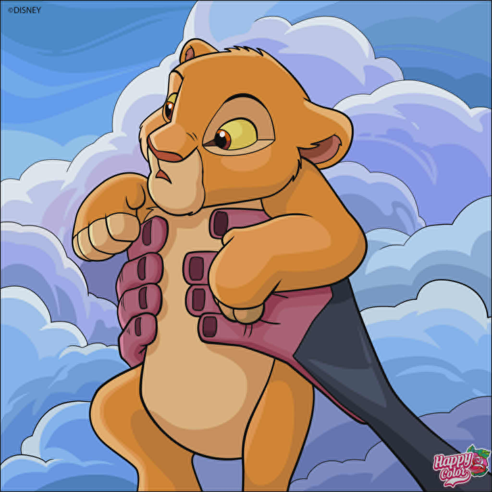
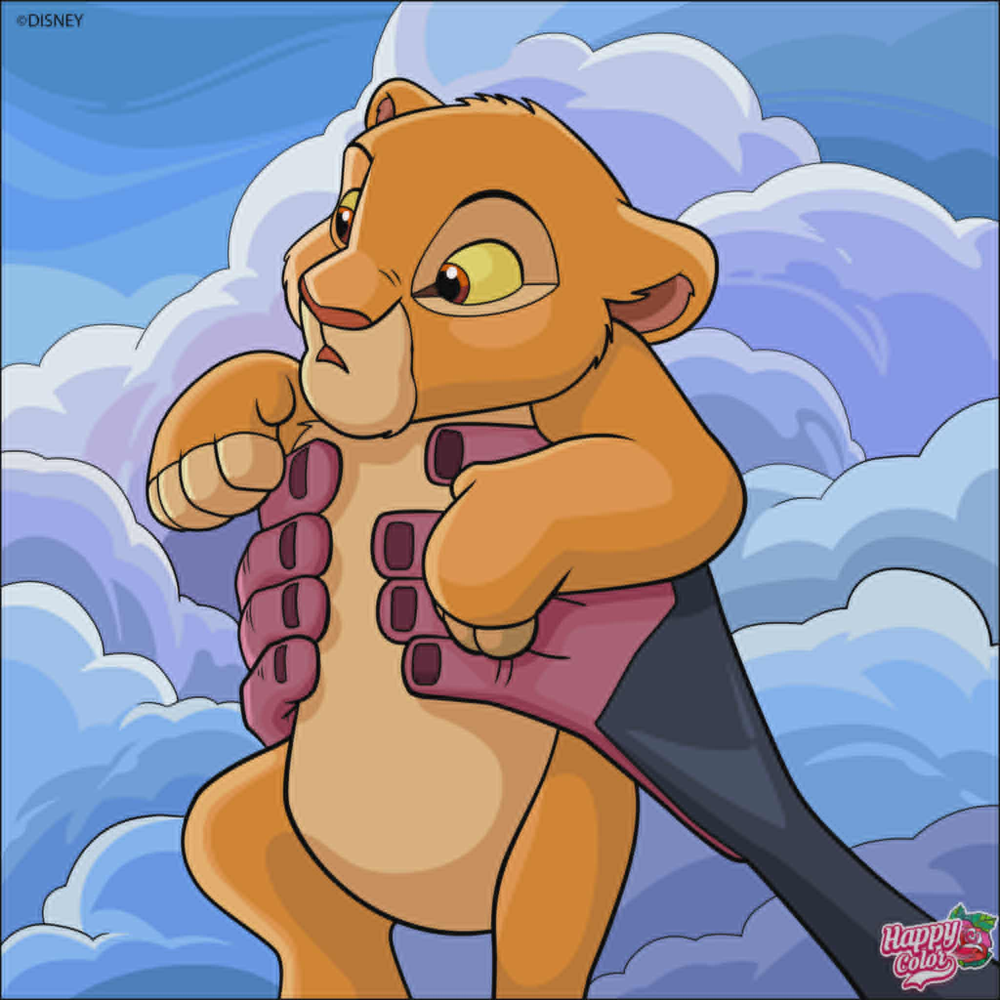

Mes Dessins
.jpg)
 

Description du dessin 1
L’histoire se déroule dans le royaume d’Arendelle. Elsa, la princesse aînée, possède le pouvoir magique de créer de la glace et de la neige.
En voulant protéger sa sœur Anna, elle cache ses dons pendant des années. Mais le jour de son couronnement, ses pouvoirs se révèlent accidentellement et elle fuit dans la montagne, où elle construit un palais de glace.
Le royaume se retrouve plongé dans un hiver éternel. Anna part à sa recherche, accompagnée de Kristoff, de son renne Sven et du bonhomme de neige Olaf.
Après de nombreuses aventures, Anna retrouve Elsa. Elle se sacrifie pour sauver sa sœur et découvre que l’amour véritable est la clé pour maîtriser la magie d’Elsa.
Finalement, l’été revient à Arendelle, et les deux sœurs se réconcilient, plus unies que jamais.
.jpg)
Dans un petit village, vivait une chatte grise nommée Plume. Chaque matin, elle grimpait sur les toits pour observer le lever du soleil.
Les habitants disaient qu’elle portait chance, car là où Plume s’installait, les fleurs poussaient toujours plus belles.
Un jour, un chaton perdu arriva au village. Il miaulait de faim et de peur. Plume s’approcha doucement, le réchauffa contre son pelage, et l’emmena jusqu’à la maison d’une vieille dame bienveillante.
Depuis ce jour, Plume et le petit chaton devinrent inséparables, veillant l’un sur l’autre et apportant joie à tout le village.
.jpg)
Au bord de la forêt, un petit moineau nommé Pico rêvait de voler plus haut que les nuages. Mais ses ailes étaient encore faibles, et il avait peur de tomber. Chaque jour, il observait les hirondelles tracer de grands cercles dans le ciel.
Un matin, une colombe l’encouragea :
« Le ciel appartient à ceux qui osent l’essayer. »
Alors Pico prit une grande inspiration, battit des ailes… et s’éleva enfin. Il ne vola pas très loin, mais assez pour sentir le vent le porter. Fier de lui, il comprit que le courage commence par un simple battement d’ailes.
.jpg)
Dans une chambre bien rangée vivait un petit hamster nommé Noisette. Il adorait remplir ses joues de graines de tournesol et courir dans sa roue. Mais Noisette avait un grand rêve : explorer le monde au-delà de sa cage.
Un soir, la porte resta entrouverte. Noisette en profita pour sortir discrètement. Il grimpa sur un bureau, découvrit un pot de crayons, puis glissa jusqu’à une boîte de biscuits. Quelle aventure ! Mais quand il entendit les pas de son jeune maître, il eut un peu peur.
Heureusement, le garçon le retrouva, le prit doucement dans ses mains et dit en riant : « Toi, tu es un vrai explorateur ! »
Et depuis ce jour, Noisette eut parfois droit à de petites balades surveillées, où il pouvait découvrir le monde sans danger.
.jpg)
Dans une clairière tranquille, vivait une jeune biche nommée Étoile. Elle adorait courir entre les arbres et sentir l’odeur des fleurs sauvages.
Mais ce qu’elle aimait le plus, c’était écouter les histoires que lui racontait sa maman, surtout quand la lune brillait dans le ciel.
Un jour, Étoile s’aventura un peu trop loin et se perdit dans la forêt.
Les bruits l’effrayaient : le vent dans les branches, le cri d’un hibou… Mais en suivant la lumière des lucioles, elle retrouva le chemin de la clairière.
Sa maman l’attendait, rassurée.
Depuis ce soir-là, Étoile comprit que la forêt était grande et mystérieuse, mais qu’avec prudence et courage, chaque promenade pouvait devenir une belle aventure.

un univers gothique fascinant.
Dans un château sombre, une jeune vampire nommée Lila rêvait de découvrir le monde au-delà de ses murs glacés. Chaque nuit, elle s’aventurait dans la forêt voisine, où les arbres semblaient murmurer des secrets anciens.
Un soir, elle rencontra un loup solitaire nommé Orion. Contrairement aux autres créatures de la nuit, il n’avait pas peur d’elle. Ensemble, ils explorèrent des ruines oubliées et des cimetières mystérieux, partageant des histoires de leurs vies solitaires.
Au fil du temps, Lila apprit à maîtriser ses pouvoirs et à embrasser son identité unique. Elle comprit que la véritable force résidait dans l’acceptation de soi et dans l’amitié sincère.
Finalement, Lila et Orion devinrent des gardiens de la nuit, protégeant les secrets de la forêt et veillant sur les âmes perdues, prouvant que même dans l’obscurité, la lumière de l’amitié peut briller intensément.
finalement, Le royaume des ombres était en paix, et Lila savait qu’elle avait trouvé sa place dans ce monde mystérieux.

Max était un garçon ordinaire jusqu’au jour où il découvrit qu’il avait des super-pouvoirs. Il pouvait voler, devenir invisible et avait une force incroyable. Mais ce qui le rendait vraiment spécial, c’était son grand cœur.
Un soir, alors qu’il rentrait de l’école, Max entendit des cris venant d’une maison voisine. Sans hésiter, il s’envola vers la maison hantée.